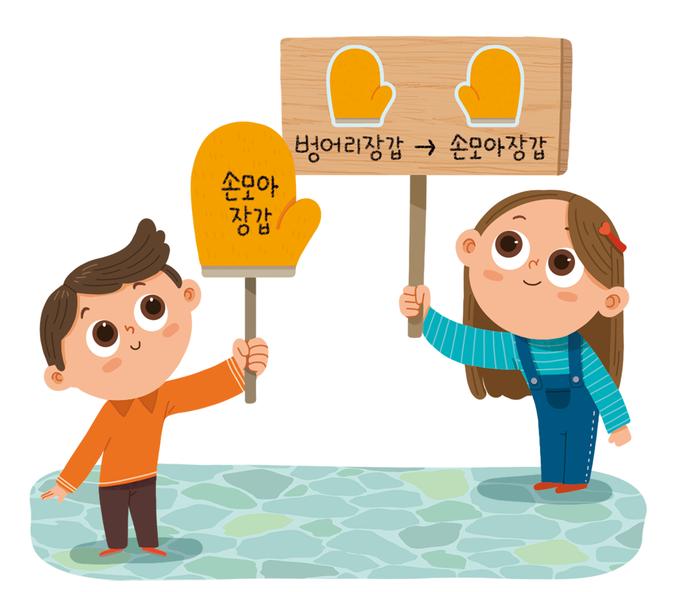

-
다음 빈칸에 들어갈 알맞은 낱말을 찾으세요.
드래그하여 옮겨 보세요서로 다른 문화를 가진 사람들이 한 사회 안에서 어울려 살아가려면 편견과 차별 없이 서로 하는 마음이 필요합니다.- 의존
- 갈등
- 경쟁
- 배려
-
다양한 문화가 함께하는 사회에 필요한 태도에 대해 바르게 말한 친구를 찾으세요.
열린 마음으로 서로의 다름을 이해하려고 노력해야 해.상대방의 입장보다는 나의 입장을 먼저 생각해야 해. -
편견과 차별 문제의 해결 방안 중 다음 그림과 관련 있는 것을 찾으세요.
- 1 서로 다른 문화를 가진 사람들이 어울리는 자리를 만든다.
- 2 편견이나 차별의 뜻이 담긴 말을 바꾸고 사람들에게 알린다.
- 3 편견과 차별 문제를 해결하기 위한 법을 만들고 관련 기관을 세운다.
- 1
- 2
- 3